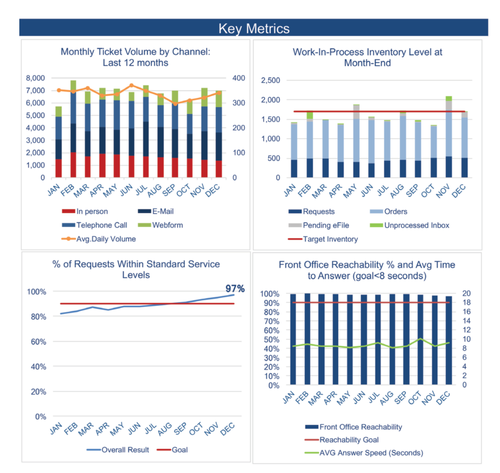

Code
library(vegawidget)Exercise #3 - Tanzania Fertility Rates
1. Scroll through the HW 4 Gallery to see the plots we created at that time. Find an example that has that has something you like about it and explain what you like.
2. Find an example that has something you don’t like, and explain what you don’t like about it.
3. Now create two graphics, one that helps compare the kits and one that helps compare twins. Give your graphics good titles, use use other principles of good visualization, and do not restrict your plot to just a small subset of the data.
library(vegawidget)'
{
"$schema": "https://vega.github.io/schema/vega-lite/v5.json",
"title": {
"text": "Do Identical Twins Receive Identical Results?",
"subtitle": "Points off the diagonal line represent inconsistencies in twin genetic testing results",
"anchor": "start"
},
"data": {
"url": "https://calvin-data304.netlify.app/data/twins-genetics-long.json"
},
"transform": [
{
"pivot": "id",
"value": "genetic share",
"groupby": ["pair", "kit", "region"]
}
],
"facet": {
"column": {
"field": "kit",
"type": "nominal",
"title": "DNA Testing Lab",
"header": {"labelFontSize": 12, "labelFontWeight": "bold"}
}
},
"spec": {
"width": 160,
"height": 160,
"layer": [
{
"mark": {"type": "line", "color": "lightgray", "strokeDash": [4,4]},
"encoding": {
"x": {"datum": 0}, "x2": {"datum": 1},
"y": {"datum": 0}, "y2": {"datum": 1}
}
},
{
"mark": {"type": "point", "filled": true, "size": 60, "opacity": 0.7, "tooltip": true},
"encoding": {
"x": {
"field": "A",
"type": "quantitative",
"title": "Twin A Share",
"axis": {
"format": "%",
"values": [0, 0.25, 0.5, 0.75, 1],
"labelFontSize": 9
}
},
"y": {
"field": "B",
"type": "quantitative",
"title": "Twin B Share",
"axis": {
"format": "%",
"values": [0, 0.25, 0.5, 0.75, 1],
"labelFontSize": 9
}
},
"color": {
"field": "region",
"type": "nominal",
"legend": {
"orient": "right",
"title": "Regions"
}
},
"tooltip": [
{"field": "pair", "title": "Twin Pair"},
{"field": "region", "title": "Region"},
{"field": "A", "title": "Twin A Result", "format": ".1%"},
{"field": "B", "title": "Twin B Result", "format": ".1%"}
]
}
}
]
},
"resolve": {
"axis": {"x": "independent", "y": "independent"}
},
"config": {
"facet": {"spacing": 5},
"view": {"stroke": "transparent"}
}
}' |> as_vegaspec()Identical twins provide the perfect control group for testing the reliability of genetic sequencing. Because identical twins share nearly identical genetics, any variation in their ancestry reports is either caused by post-zygotic mutations or an imperfection within the laboratory’s algorithm.
This visualization uses a 45-degree identity line to measure this defect. In a perfect system, every colored dot (representing a specific regional genetic share) would sit exactly on the dashed line. However, the scatter plot reveals frequent divergence, these are shown as points off the line. These represent instances where one twin was told they have a specific heritage while their identical sibling was given a different number.
While this graph is faceted by the genetic testing kit used, it ultimately demonstrates the reported differences in twins. From this fact (that is based on some limited research; I do not claim to have a complete understanding of twin genetics), we can draw two possible conclusions: 1) There are high rates of post-zygotic mutations among identical twins, 2) While consumer DNA kits are powerful tools, they are not yet precise enough to deliver nearly identical results to individuals with nearly identical DNA. Therefore, the dispersion seen on the graphs serves either as clear evidence for mutations during post-split development or as a visual margin of error for the entire industry.
'
{
"$schema": "https://vega.github.io/schema/vega-lite/v5.json",
"title": {
"text": "Average Interpretation Error by DNA Kit",
"subtitle": "Average percentage difference between twin results by genetic region",
"anchor": "start"
},
"autosize": {"type": "fit", "contains": "padding"},
"data": {
"url": "https://calvin-data304.netlify.app/data/twins-genetics-long.json"
},
"transform": [
{
"pivot": "id",
"value": "genetic share",
"groupby": ["pair", "kit", "region"]
},
{
"calculate": "abs(datum.A - datum.B)",
"as": "discrepancy"
},
{
"aggregate": [{"op": "mean", "field": "discrepancy", "as": "avg_error"}],
"groupby": ["kit", "region"]
}
],
"width": 600,
"height": 400,
"mark": {"type": "point", "filled": true, "size": 100},
"encoding": {
"y": {
"field": "region",
"type": "nominal",
"title": null,
"axis": {"minExtent": 150}
},
"x": {
"field": "avg_error",
"type": "quantitative",
"title": "Avg. Difference Between Twins",
"axis": {"format": "%"}
},
"color": {"field": "kit", "type": "nominal", "title": "DNA Kit"},
"tooltip": [
{"field": "kit", "title": "Kit"},
{"field": "region", "title": "Region"},
{"field": "avg_error", "title": "Avg Error", "format": ".1%"}
]
}
}' |> as_vegaspec()While individual results vary, assuming that the discrepancies observed in the previous visualization are primarily a result of testing imperfections rather than biological divergence, this aggregated view identifies systemic patterns in laboratory interpretation. By calculating the average difference between identical twins across all six pairs, we can measure the faults inherent in genetic testing.
The visualization reveals two primary insights:
Broad categories (like NW Europe) show high consistency, whereas more specific regions (like SE Europe) show much wider margins of error. This suggests that the “precision” promised by testing labs often comes at the expense of accuracy.
Inconsistency is not uniform. A lab may be highly accurate with one regional marker but struggle with another, proving that results are heavily dependent on a company’s specific internal model.
Simply put, these data points show that a DNA report is not a concrete biological fact, but a variable interpretation. The “DNA story” provided to consumers is highly dependent on the algorithm used to read it.
4. For each graphic, include a paragraph that tells the story of your graphic.
Challenge #4: Tickets

1. Write a sentence describing a key takeaway for each graph shown in the report.a. Graph #1: Monthly Ticket Volume by Channel: Last 12 Months
b. Graph #2: Work-In-Process Inventory Level at Month-End
c. Graph #3: % of Requests Within Standard Service Levels
d. Graph #4: Front Office Reachability % and Avg Time to Answer (goal <8 seconds)
2. Imagine you need to tell a story with this data: which parts of the report would you focus on and which (if any) would you omit? It may be important to look at all of these things as we are exploring the data, but not all of the data is necessarily equally interesting when it comes to communicating it to our audience.
a. Focus on: Challenges to Successes
Graph #3 (% of Requests Within Service Levels): This is the “focus” metric. It shows steady growth and the team winning as the year goes on.
Graph #2 (Inventory Level/Backlog): This is the dramatic piece. It shows the May and November spikes that threatened the team’s success.
Graph #4 (Reachability/Answer Speed): This is the information that corroborates and complements the story. It proves that even when the backlog was high at times, the front office maintained a high level of reachability.
b. Omit (or De-emphasize):
c. Use the data to create a webpage or slide deck to tell a visual story with the elements you selected to include in Step 2. Imagine this will be read by someone who is somewhat familiar with the data, but doesn’t deal with on a daily basis. Be sure to include enough text/context to walk them through your story.
Deep dive into the ticket data
1. Enter the data into Excel, a CSV, or JSON file. You will have some decisions to make about things like variable names, etc. Be sure to include a link to the data set you create on your portfolio website. Notice that some of the surveys were conducted all in one year and some spanned two calendar years. How will you deal with that?
See dataset link above: Back to Top
I am going to use a quantitative approach by taking the first of the two years when applicable but labeling with the full string (e.g., using the value 2015, but marking it as ‘2015-2016’). This preserves the more accurate spacing between the years (as opposed to treating x as a ‘Nominal’ type).
2. Use these data to create a visualization that tells a story.
'
{
"$schema": "https://vega.github.io/schema/vega-lite/v5.json",
"title": {
"text": "The Access Gap and Fertility Trends",
"subtitle": "Tanzania DHS Data (1991-2016): Impact of family planning on fertility rates",
"anchor": "start"
},
"data": {"url": "Tanzania.csv"},
"transform": [
{
"calculate": "toNumber(split(datum[\'DHS Survey Year\'], \'-\')[0])",
"as": "year_start"
}
],
"vconcat": [
{
"title": "Family Planning Access",
"width": 600,
"height": 350,
"layer": [
{
"mark": {"type": "line", "color": "#2c7fb8", "point": true, "size": 3},
"encoding": {
"x": {
"field": "year_start",
"type": "quantitative",
"axis": {"labels": false, "title": null, "values": [1991, 1996, 1999, 2004, 2010, 2015]}
},
"y": {
"field": "Current Use of a Modern Method of Contraception-All Women (%)",
"type": "quantitative",
"title": "% of Women",
"scale": {"domain": [0, 50]}
}
}
},
{
"mark": {"type": "line", "color": "#756bb1", "point": true, "size": 3, "strokeDash": [4,2]},
"encoding": {
"x": {"field": "year_start", "type": "quantitative"},
"y": {"field": "Unmet Need for Family Planning-All Women (%)", "type": "quantitative"}
}
},
{
"transform": [{"filter": "datum[\'year_start\'] == 2015"}],
"layer": [
{
"mark": {"type": "text", "align": "left", "dx": -100, "dy": -10, "fontWeight": "bold"},
"encoding": {
"x": {"field": "year_start", "type": "quantitative"},
"y": {"field": "Current Use of a Modern Method of Contraception-All Women (%)", "type": "quantitative"},
"text": {"value": "Contraception Use"},
"color": {"value": "#2c7fb8"}
}
},
{
"mark": {"type": "text", "align": "left", "dx": -60, "dy": 15, "fontWeight": "bold"},
"encoding": {
"x": {"field": "year_start", "type": "quantitative"},
"y": {"field": "Unmet Need for Family Planning-All Women (%)", "type": "quantitative"},
"text": {"value": "Unmet Need"},
"color": {"value": "#756bb1"}
}
}
]
}
]
},
{
"title": "Total Fertility Rate (TFR)",
"width": 600,
"height": 100,
"mark": {"type": "line", "color": "#111184", "point": true, "size": 3},
"encoding": {
"x": {
"field": "year_start",
"type": "quantitative",
"title": "Survey Period",
"axis": {
"format": "d",
"values": [1991, 1996, 1999, 2004, 2010, 2015],
"labelExpr": "datum.value == 1991 ? \'1991-92\' : datum.value == 2004 ? \'2004-05\' : datum.value == 2015 ? \'2015-16\' : datum.value"
}
},
"y": {
"field": "Total Fertility Rate All Women Ages 15-49",
"type": "quantitative",
"title": "TFR"
}
}
}
],
"config": {
"title": {
"fontSize": 22,
"subtitleFontSize": 16,
"subtitlePadding": 10
},
"axis": {
"labelFontSize": 13,
"titleFontSize": 14
},
"view": {"stroke": "transparent"},
"spacing": 15
}
}
' |> as_vegaspec()3. Write a few sentences explaining the story told.
Initially, you might assume that the story would sound something like this: “The story told by this visualization is one of national progress and systemic convergence, we see the closing of a significant public health gap in Tanzania. For the first time in the recorded dataset, the”supply” of modern contraception and family planning has caught up to and begun to surpass the “unmet demand,” indicating a move toward a more sustainable and equitable public health model. This is corroborated by the downward trend in Total Fertility Rate, decreasing from 6.2 to 5.2 over the 26 year period.”
However I feel as though this graph provides a much more nuanced view. While it is clear the modern contraception use has gone up and the unmet need for family planning has gone down (clearly correlated with the fertility rates), they happen at alarmingly differing rates. While modern contraception use has increased by over 40%, the unmet need has only decreased by 10% and fertility rate has decreased by 1, indicating that, while modern contraception has been instrumental in meeting the need for family planning, it is far from being the all-encompassing solution.
1. Using a data set of your choosing, create a graphic that demonstrates your abilities to design and create a graphic that tells a compelling story.
'
{
"$schema": "https://vega.github.io/schema/vega-lite/v5.json",
"data": {"url": "world_cup_results.csv"},
"title": {
"text": "World Cup Winners: The Golden Age of Scoring",
"subtitle": "Total Goals vs. Goals Per Match (GPM). Click a point to sync the timeline.",
"anchor": "start"
},
"params": [
{
"name": "YearLimit",
"value": 2014,
"bind": {
"input": "range", "min": 1930, "max": 2014, "step": 4, "name": "Year Limit: "
}
},
{
"name": "pts",
"select": {"type": "point", "fields": ["Year"]}
}
],
"transform": [
{
"calculate": "toNumber(datum.GoalsScored) / (toNumber(datum.MatchesPlayed) > 0 ? toNumber(datum.MatchesPlayed) : 1)",
"as": "GoalsPerMatch"
},
{"filter": "datum.Year <= YearLimit"}
],
"vconcat": [
{
"width": 600,
"height": 300,
"mark": {"type": "point", "filled": true, "size": 200, "stroke": "white", "strokeWidth": 1},
"encoding": {
"x": {
"field": "Year",
"type": "ordinal",
"axis": null
},
"y": {
"field": "GoalsScored",
"type": "quantitative",
"title": "Total Goals Scored"
},
"color": {
"condition": {
"param": "pts",
"field": "MatchesPlayed",
"type": "quantitative",
"scale": {"scheme": "magma", "reverse": true}
},
"value": "#e0e0e0"
},
"opacity": {
"condition": {"param": "pts", "value": 1},
"value": 0.3
},
"tooltip": [
{"field": "Year", "type": "ordinal"},
{"field": "Winner", "type": "nominal"},
{"field": "GoalsPerMatch", "type": "quantitative", "format": ".2f"}
]
}
},
{
"width": 600,
"height": 100,
"mark": {"type": "bar"},
"encoding": {
"x": {
"field": "Year",
"type": "ordinal",
"title": "Tournament Timeline (Year)",
"axis": {
"labelAngle": 0,
"labelExpr": "(substring(datum.label, 2, 4))"
}
},
"y": {
"field": "GoalsPerMatch",
"type": "quantitative",
"title": "Avg GPM"
},
"color": {
"condition": {"param": "pts", "value": "#4682b4"},
"value": "#d1dae0"
}
}
}
],
"config": {"view": {"stroke": "transparent"}}
}
' |> as_vegaspec()The graph shown above is my masterpiece. Not only does it demonstrate changes to the World Cup, as a tournament, over time, but it highlights the statistics from the winning country each year. While it may seem obvious that more goals would be scored as the number of games played by the winning team increased, this is crucial to highlight when shown in contrast to the inverse trend of decreasing Goals Per Match shown in the lower graph.
The slider is especially useful because it allows the viewer to start at the base year of 1930 and slowly increase the number of years displayed. This manual animation makes it much easier to see when the “Golden Age of Scoring” ended after the 1950s. Furthermore, it acts as a boundary to allow for the comparison of eras, encouraging actice learning from the viewer.
2. Explain the choices you made when designing your graphic and relate them to principles of good graphics that we have learned or seen in this class. Mention alternatives to your graphic that you considered but did not opt to submit.
a. Principles of Good Graphics (Tufte & Beyond):
Maximizing the Data-Ink Ratio: I removed the X-axis from the top scatter plot because it was redundant. Tufte argues that “non-data ink” (like repeated labels) should be erased to reduce cognitive load. Since the charts are vertically aligned, the bottom axis serves both plots perfectly.
Focus + Context through Interaction: By linking the scatter plot and bar chart via a “Year” selection, I implemented a system that allows for the user to see the 80-year macro-trend while clicking to isolate specific/micro tournament stats.
Avoiding Chartjunk: I used a transparent view configuration and minimized grid lines. This ensures the “ink” is used almost exclusively for the data points themselves, preventing decorative elements from competing with the information.
Visual Integrity: I maintained a zero-baseline for both Y-axes. This avoids the “Lie Factor,” ensuring the decline in scoring efficiency is represented accurately rather than exaggerated by a clipped axis.
b. Alternatives Considered:
3. Be sure to include information about where you got your data from. This could be a link to a website, a proper citation of an article, a description of a research project you have been working on, etc.
Data acquired from: Tableau Public Datasets
See link above for the data: Back to Top
1. The grammar of graphics gives us a palette of graphical elements with which to “paint” our graphic. The palette includes various marks, channels, composition, etc. One of the goals for your portfolio is that you demonstrate the ability to use a variety of these features and use them effectively. Look over your graphics, and identify a place where you used:
a. an encoding channel other than x or y: The first graph of Exercise #1, to map the region to color and assign a respective legend.
b. layers: The first graph of Exercise #1, to show the dashed gray stroke to emphasize discrepancies.
c. facets: The first graph of Exercise #1, the graphs are faceted by DNA kit to more effectively compare both twin and kit results.
d. concatenation or repeat: Exercise #4, vertical concatenation to display the relationship between Total Goals and Attendance in the top view, and Goals Per Match in the bottom timeline.
e. non-default settings for a channel’s scale or guide: The graph in part two of Exercise #3, the Modern Contraception Percentage on the y-axis is limited to the range of 0 to 50.
f. tooltips: The second graph of Exercise #1, the graph has a tooltip to display the kit, region, and average error information for the points on the graph.
g. another kind of interaction (panning/zooming, brushing, sliders, etc.): Exercise #4, the dynamic filter controlled by a slider to control the given years up to a certain selected point on the timeline.
1. Cite 2 or 3 specific examples in the graphics in your portfolio where you used a feature of Vega-Lite/vegabrite/Altair/altair that we did not learn in class. This might be using a new kind of mark or transform, or a way to customize a feature of the graphic, or a way to use interaction, or…
In Exercise #4, I used a complex JavaScript-based Label Expression with a substring to format the years. This allowed for a high-density “YY” format that isn’t available as a standard Vega-Lite time format.
In Exercise #2, I used ifelse statements to mutate the data to get the correct percentage values.
2. You will also want to keep learning about principles of good graphics design. Cite 2 or 3 specific examples where you followed the advice in one of the resources from class. Provide specific page (for print or pdf) or section (for HTML) references. Include direct links, if possible. (HTML books often make it easy to link directly to a section.)
Following Edward Tufte’s principles in The Visual Display of Quantitative Information (specifically the focus on “Erasing Non-Data-Ink”, p. 91-105), I customized the config in nearly all my plots to remove outer view borders (“stroke”: “transparent”) and unnecessary gridlines. This is most evident in the Twin Genetics scatter plots, where the focus remains on the data points and the identity line rather than the chart’s frame.
In Exercise #4, I followed the advice found in Claus Wilke’s Fundamentals of Data Visualization regarding secondary axes (Chapter 3, “Visualizing amounts”). Instead of overlaying “Total Goals” and “Goals Per Match” on one graph, I used vertical concatenation to create separate panels. This maintains the visual integrity of both scales while still allowing for a direct comparison across the shared timeline.
Healy, K. 2019. Data Visualization: A Practical Introduction. Princeton University Press. https://socviz.co/. Heer, Dominik, Jeffrey AND Moritz. 2024. “Mosaic: An Architecture for Scalable & Interoperable Data Views.” IEEE Trans. Visualization & Comp. Graphics (Proc. VIS). https://doi.org/10.1109/TVCG.2023.3327189. Knaflic, C. N. 2015. Storytelling with Data: A Data Visualization Guide for Business Professionals. Wiley. https://github.com/Saurav6789/Books-/blob/master/storytelling-with-data-cole-nussbaumer-knaflic.pdf. ———. 2020. Storytelling with Data: Let’s Practice! Wiley. https://github.com/Saurav6789/Books-/blob/master/Storytelling%20with%20Data%20Let% E2%80%99s%20Practice%20by%20Cole%20Nussbaumer%20Knaflic%20(z-lib.org).pdf. Tufte, Edward R. 2001. The Visual Display of Quantitative Information. 2nd ed. Cheshire, CT: Graphics Press. https://kyl.neocities.org/books/%5BTEC%20TUF%5D%20the%20visual%20display%20of% 20quantitative%20information.pdf. Wilke, C. O. 2019. Fundamentals of Data Visualization: A Primer on Making Informative and Compelling Figures. O’Reilly Media. https://clauswilke.com/dataviz/.